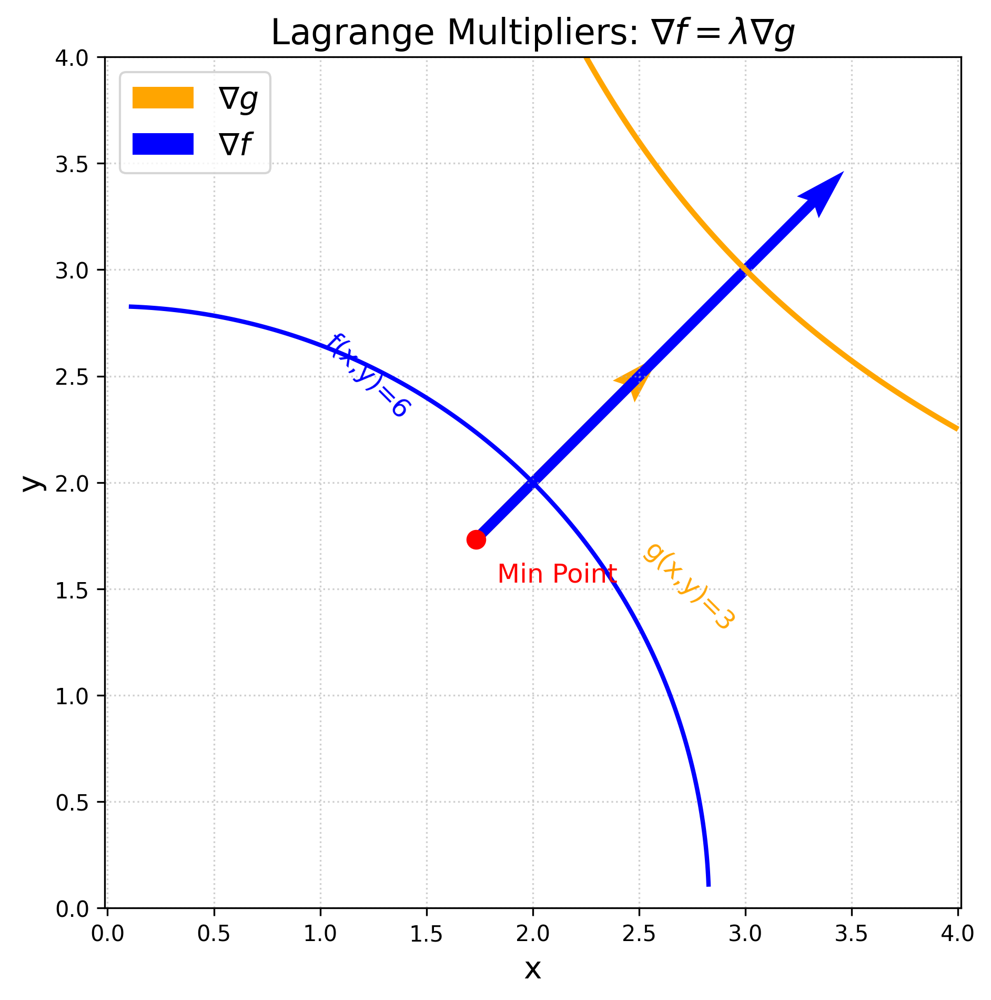

第十章: 多元函数的微分
多元函数的微分是一元函数微分的推广, 它的一个非常重要的应用是求多元函数的极值. 例如 (P115例6) 有一块宽为 24cm 的方形铁板, 把它两边折起来做成一个断面为等腰梯形的水槽, 问怎样的折法才能使得截面面积最大? 设折出来的梯形底边长度为 x, 斜边的角度为 \theta, 则截面积可写成
S(x, \theta) = 24 x \sin\theta - 2x^2 \sin\theta + x^2 \sin\theta \cos\theta
这是一个关于 x, \theta 的二元函数, 如何求它的最大值呢? 我们可以带着这个问题开始本章的学习.
10.1 多元函数的连续性
在一元微积分中, 连续函数是我们的主要研究对象, 在多元微积分中同样也是这样. 下面我们先介绍一些准备知识作为铺垫, 然后给出多元函数极限和连续的定义.
10.1.1 区域
在一元函数中, 我们经常区间的概念, 如开区间 (a, b), 闭区间 [a, b]. 区域是区间在高维空间中的推广. 下面我们以 \mathbb{R}^2 为例进行介绍, 但所有的概念都可以推广到 \mathbb{R}^n 中.
设 P_0(x, y) 是 \mathbb{R}^2 中的一点, 给定 \delta > 0, \mathbb{R}^2 中所有与点 P_0 距离小于 \delta 的点构成一个集合, 称为点 P_0 的 \delta-邻域, 记作 U(P_0, \delta), 即 U(P_0, \delta) = \{ (x, y)| \sqrt{(x-x_0)^2+ (y-y_0)^2} < \delta\}.
P_0 与其自己的距离为0, 所以根据上述定义, P_0\in U(P_0, \delta). 但有时候我们希望排除掉 P_0 这一点, 在集合 U(P_0, \delta) 中把 P_0 去掉, 由此得到的集合称为 P_0 的 \delta-去心邻域, 记作 \overset{\circ}{U}(P_0, \delta), 即 \overset{\circ}{U}(P_0, \delta) = \{ (x, y)| 0 < \sqrt{(x-x_0)^2+ (y-y_0)^2} < \delta\}.
有时候我们不关心 \delta 的具体取值 (比如接下来的问题中), 往往简单用 U(P_0) 和 \overset{\circ}{U}(P_0) 分别表示 P_0 的邻域和去心邻域.
任意给定一个 \mathbb{R}^2 中的集合 D, 任意一点 P 与 D 的关系比符合以下三种关系中的一种:
- 内点: 存在点 P 的某个邻域 U(P), 使得 U(P) \subset D.
- 外点: 存在点 P 的某个邻域 U(P), 使得 U(P) \cap D = \emptyset.
- 边界点: 点 P 的任一邻域内既有属于 D 的点, 又有不属于 D 的点.
集合 D 的全体边界点所构成的集合称为 D 的边界, 记作 \partial D.
判断集合 1 < x^2 + y^2 < 2 中各点的内点、外点和边界点.
分别考虑满足 x^2+y^2<1、x^2+y^2=1、1<x^2+y^2<2、x^2+y^2=2、x^2+y^2>2 的点，对每种情形找一个邻域加以判断.
设集合 D = \{(x,y) \mid 1 < x^2 + y^2 < 2\}.
内点： 对满足 1 < x^2 + y^2 < 2 的点 P，取足够小的 \delta > 0（例如取 \delta = \min\{x^2+y^2-1,\ 2-x^2-y^2\}/2），则 P 的 \delta-邻域完全包含于 D，故 P 是 D 的内点.
外点： 对满足 x^2 + y^2 < 1 或 x^2 + y^2 > 2 的点 P，存在足够小的邻域与 D 不相交，故 P 是 D 的外点.
边界点： 满足 x^2 + y^2 = 1 或 x^2 + y^2 = 2 的点 P，其任意邻域内既有属于 D 的点，也有不属于 D 的点，故 P 是 D 的边界点.
因此，D 的边界为 \partial D = \{(x,y) \mid x^2+y^2=1\} \cup \{(x,y) \mid x^2+y^2=2\}，即两个同心圆.
开集: 集合中的所有点都是其内点 闭集: 集合的边界属于该集合, \partial D \in D
证明集合 D = \{(x,y) \mid 1 < x^2 + y^2 < 2\} 为开集.
按开集定义，对 D 中任意一点，找到一个完全包含于 D 的邻域即可.
要证 D 是开集，需证 D 中的每一个点都是 D 的内点.
设 P(x,y) \in D，即 1 < x^2 + y^2 < 2.
令 r_1 = x^2 + y^2 - 1 > 0，r_2 = 2 - x^2 - y^2 > 0，取
\delta = \frac{\min\{r_1, r_2\}}{2} > 0.
对 P 的 \delta-邻域 U(P,\delta) 中任意一点 Q(x',y')，有
\left|\sqrt{x'^2+y'^2} - \sqrt{x^2+y^2}\right| \leq \sqrt{(x'-x)^2+(y'-y)^2} < \delta.
因此
x^2+y^2 - \delta < x'^2+y'^2 < x^2+y^2 + \delta,
从而
x'^2+y'^2 > x^2+y^2 - \delta \geq 1 + r_1 - \frac{r_1}{2} > 1,
x'^2+y'^2 < x^2+y^2 + \delta \leq 2 - r_2 + \frac{r_2}{2} < 2.
故 Q \in D，即 U(P,\delta) \subset D. 由此 P 是 D 的内点.
由 P 的任意性，D 的每个点都是内点，所以 D 是开集. \blacksquare
顾名思义, 如果集合 D 中的任意两点都可以用折线连接起来, 且该折线上的点都属于 D, 则称 D 为连通集.
连通开集称为区域(或开区域); 开区域连同它的边界一起所构成的集合称为闭区域.
集合 \{(x,y) \mid 1 < x^2 + y^2 < 2\} 是开区域,而集合 \{(x,y) \mid 1 \leq x^2 + y^2 \leq 2\} 是闭区域.
有界集 : 对于平面点集 E,如果存在正数 r,使得E \subset U(O, r),其中 O 为坐标原点,则称 E 为有界集, 无界集 : 如果一个集合不是有界集,则称其为无界集,
10.1.2 多元函数的极限
下面我们以含有两个自变量的函数, 即二元函数为例引入多元函数及其极限的概念. 相关概念可以很容易推广到含有三个或更多自变量的多元函数中去.
设 D 是 \mathbb{R}^2 中的非空子集,称映射 f: D \to \mathbb{R} 为定义在 D 上的二元函数,记为 z = f(x, y), \quad (x, y) \in D
其中 D 称为函数的定义域 ,x 和 y 称为自变量.
二元函数的极限
设 f(x,y) 的定义在 D 上的二元函数,P_0(x_0, y_0) 是 D 的聚点,如果存在常数 A,对于任意给定的正数 \varepsilon,总存在正数 \delta,使得当 (x,y) \in U(P_0, \delta) 时,有 $ |f(x, y) - A| < $,则称 A 为函数 f(x,y) 当 (x,y) 趋于 (x_0, y_0) 时的极限,记作 \displaystyle\lim_{(x,y) \to (x_0, y_0)} f(x,y) = A.
注意从 (x, y) 趋于 (x_0, y_0) 有无数条路径, 极限存在要求任意一条路径都成立, 不能仅仅验证从 x-轴趋近和从y-轴趋近就断言极限存在.
设 f(x,y) = (x^2 + y^2) \displaystyle\sin \frac{1}{x^2 + y^2}，求证：
\lim_{(x,y) \to (0,0)} f(x,y) = 0.
利用夹逼定理：对正弦函数用绝对值不等式 |\sin(\cdot)| \le 1，将 |f(x,y)| 用 x^2+y^2 上界控制，再用 \varepsilon-\delta 语言严格证明。
函数 f(x,y) 的定义域为 D = \mathbb{R}^2 \backslash \{(0,0)\}，点 O(0,0) 为 D 的聚点。
因为
|f(x,y) - 0| = \left| (x^2 + y^2) \sin \frac{1}{x^2 + y^2} \right| \leq x^2 + y^2,
可见，\forall \varepsilon > 0，取 \delta = \sqrt{\varepsilon}，则当 0 < \sqrt{(x-0)^2 + (y-0)^2} < \delta 时，即 P(x,y) \in D \cap U(O, \delta) 时，总有
|f(x,y) - 0| \leq x^2 + y^2 < \delta^2 = \varepsilon
成立，所以
\lim_{(x,y) \to (0,0)} f(x,y) = 0.
考察函数
f(x,y) = \begin{cases} \dfrac{xy}{x^2 + y^2}, & x^2 + y^2 \neq 0, \\ 0, & x^2 + y^2 = 0 \end{cases}
在点 (0, 0) 处的极限是否存在。
沿坐标轴趋近时极限均为 0，但沿直线 y = kx 趋近时极限依赖于 k，由此说明极限不存在。
沿 x 轴趋近（令 y = 0）：
\lim_{x \to 0} f(x, 0) = \lim_{x \to 0} 0 = 0.
沿 y 轴趋近（令 x = 0）：
\lim_{y \to 0} f(0, y) = \lim_{y \to 0} 0 = 0.
虽然沿坐标轴趋近时极限均为 0，但不能由此断定极限存在。当点 P(x,y) 沿直线 y = kx 趋于 (0,0) 时，
\lim_{x \to 0} f(x, kx) = \lim_{x \to 0} \frac{k x^2}{x^2 + k^2 x^2} = \frac{k}{1 + k^2}.
k 不同时极限值不同，故函数在 (0, 0) 处的极限不存在。
求极限
\lim_{(x,y) \to (0,2)} \frac{\sin(xy)}{x}.
将 \dfrac{\sin(xy)}{x} 改写为 \dfrac{\sin(xy)}{xy} \cdot y，再利用 \lim_{u \to 0} \dfrac{\sin u}{u} = 1。
函数 \dfrac{\sin(xy)}{x} 的定义域为 D = \{(x,y) \mid x \neq 0, y \in \mathbb{R}\}，P_0(0,2) 为 D 的聚点。
\lim_{(x,y) \to (0,2)} \frac{\sin(xy)}{x} = \lim_{(x,y) \to (0,2)} \left[ \frac{\sin(xy)}{xy} \cdot y \right] = \lim_{xy \to 0} \frac{\sin(xy)}{xy} \cdot \lim_{y \to 2} y = 1 \cdot 2 = 2.
10.1.3 多元函数的连续性
下面我们仍然以二元函数为例引入多元函数连续的概念. 相关概念可以很容易推广到含有三个或更多自变量的多元函数中去.
设 f(x, y) 为定义在 D 上的二元函数,P_0 (x_0, y_0) 为 D 的聚点,且 P_0 \in D,如果 $ _{(x,y) (x_0, y_0)} f(x, y) = f(x_0, y_0)$, 则称函数 f(x, y) 在点 P_0 (x_0, y_0) 连续, 进一步, 如果函数 f(x, y) 在 D 内每一点都连续,则称函数 f(x, y) 为 D 上的连续函数.
间断点 设函数 f(x,y) 的定义域为 D,P_0(x_0, y_0) 是 D 的聚点,如果函数 f(x,y) 在点 P_0(x_0, y_0) 不连续,那么称 P_0(x_0, y_0) 为函数 f(x,y) 的间断点,
与闭区间上一元连续函数的性质相类似,在有界闭区域上连续的多元函数具有如下性质:
性质1: 最大值与最小值
有界闭区域 D 上的多元连续函数必定在 D 上有界,且能取到它的最大值和最小值,性质2: 介值定理
有界闭区域 D 上的多元连续函数能取到介于最大值和最小值之间的任何值,
10.2 偏导数
固定其它变量, 看一个变量变化对函数值的影响.
设函数 z=f(x,y) 在点 (x_0,y_0) 的某一邻域内有定义,固定 y=y_0 让 x 在 x_0 附近变化, 若极限
\displaystyle\lim_{\Delta x \to 0} \displaystyle\frac{f(x_0 +
\Delta x, y_0) - f(x_0, y_0)}{\Delta x} \tag{2-1}
存在, 则称此极限为函数 z=f(x,y) 在点 (x_0,y_0) 处对 x
的偏导数,记作：
\left. \displaystyle\frac{\partial z}{\partial x} \right|_{x=x_0},
\quad \left. \displaystyle\frac{\partial f}{\partial x}
\right|_{x=x_0}, \quad z_x \bigg|_{x=x_0} \text{ 或 } f_x(x_0,
y_0)
类似地, 函数 z=f(x,y) 对 y 的偏导数为：
\displaystyle\lim_{\Delta y \to 0} \displaystyle\frac{f(x_0, y_0 +
\Delta y) - f(x_0, y_0)}{\Delta y}
记作：
\displaystyle\left. \displaystyle\frac{\partial z}{\partial y}
\right|_{y=y_0}, \quad \left. \displaystyle\frac{\partial
f}{\partial y} \right|_{y=y_0}, \quad z_y \bigg|_{y=y_0} \text{ 或
} f_y(x_0, y_0)
若 z=f(x,y) 在区域 D 内每一点 (x,y) 处对 x 的偏导数存在,
则由此构成的函数称为偏导函数,记作：
\displaystyle\frac{\partial z}{\partial x}, \quad
\displaystyle\frac{\partial f}{\partial x}, \quad z_x \text{ 或 }
f_x(x, y)
对 y
的偏导函数记为：
\displaystyle\frac{\partial z}{\partial y}, \quad
\displaystyle\frac{\partial f}{\partial y}, \quad z_y \text{ 或 }
f_y(x, y)
求分段函数
z = f(x, y) = \begin{cases} \dfrac{xy}{x^2 + y^2}, & x^2 + y^2 \neq 0, \\ 0, & x^2 + y^2 = 0 \end{cases}
在点 (0, 0) 处的偏导数 f_x(0,0) 和 f_y(0,0)。
在原点处不能用求导公式，需回到偏导数的定义，用差商极限直接计算。
计算 f_x(0,0)：
f_x(0, 0) = \lim_{\Delta x \to 0} \frac{f(0 + \Delta x,\, 0) - f(0, 0)}{\Delta x} = \lim_{\Delta x \to 0} \frac{0 - 0}{\Delta x} = 0.
计算 f_y(0,0)：
f_y(0, 0) = \lim_{\Delta y \to 0} \frac{f(0,\, 0 + \Delta y) - f(0, 0)}{\Delta y} = \lim_{\Delta y \to 0} \frac{0 - 0}{\Delta y} = 0.
故 f_x(0,0) = f_y(0,0) = 0。
注意： 尽管偏导数在原点存在，但由例 chpt10-ex-002 知该函数在原点的极限不存在，故函数在原点不连续，这说明偏导数存在不能保证函数连续。
==高阶偏导数==
对偏导函数再求偏导数称为二阶偏导数, 以此类推还有三阶偏导数和更高阶的偏导数.
对 x 的二阶偏导： \displaystyle\displaystyle\frac{\partial}{\partial x} \left( \displaystyle\frac{\partial z}{\partial x} \right) = \displaystyle\frac{\partial^2 z}{\partial x^2} = f_{xx}(x, y)
先对 x 后对 y 的混合偏导： \displaystyle\frac{\partial}{\partial y} \left( \displaystyle\frac{\partial z}{\partial x} \right) = \displaystyle\frac{\partial^2 z}{\partial x \partial y} = f_{xy}(x, y)
先对 y 后对 x 的混合偏导： \displaystyle\frac{\partial}{\partial x} \left( \displaystyle\frac{\partial z}{\partial y} \right) = \displaystyle\frac{\partial^2 z}{\partial y \partial x} = f_{yx}(x, y)
对 y 的二阶偏导： \displaystyle\frac{\partial}{\partial y} \left( \displaystyle\frac{\partial z}{\partial y} \right) = \displaystyle\frac{\partial^2 z}{\partial y^2} = f_{yy}(x, y)
设函数 z = x^3 y^2 - 3xy^3 - xy + 1，求下列高阶偏导数：
\frac{\partial^2 z}{\partial x^2},\quad \frac{\partial^2 z}{\partial y \partial x},\quad \frac{\partial^2 z}{\partial x \partial y},\quad \frac{\partial^2 z}{\partial y^2} \quad \text{及}\quad \frac{\partial^3 z}{\partial x^3}.
先分别求出对 x 和对 y 的一阶偏导数，再对结果继续求偏导. 注意混合偏导数 \frac{\partial^2 z}{\partial y \partial x} 表示先对 x 求偏导再对 y 求偏导.
第一步：求一阶偏导数.
\frac{\partial z}{\partial x} = 3x^2 y^2 - 3y^3 - y
\frac{\partial z}{\partial y} = 2x^3 y - 9xy^2 - x
第二步：求二阶偏导数.
\frac{\partial^2 z}{\partial x^2} = \frac{\partial}{\partial x}(3x^2 y^2 - 3y^3 - y) = 6xy^2
\frac{\partial^2 z}{\partial y \partial x} = \frac{\partial}{\partial y}(3x^2 y^2 - 3y^3 - y) = 6x^2 y - 9y^2 - 1
\frac{\partial^2 z}{\partial x \partial y} = \frac{\partial}{\partial x}(2x^3 y - 9xy^2 - x) = 6x^2 y - 9y^2 - 1
\frac{\partial^2 z}{\partial y^2} = \frac{\partial}{\partial y}(2x^3 y - 9xy^2 - x) = 2x^3 - 18xy
注意两个混合偏导数相等，这与二阶混合偏导数在连续时与求导次序无关的定理一致.
第三步：求三阶偏导数.
\frac{\partial^3 z}{\partial x^3} = \frac{\partial}{\partial x}(6xy^2) = 6y^2
==二阶混合偏导数定理==
如果函数 z = f(x, y) 的二阶混合偏导数 $ $ 在区域 D 内连续,那么在该区域内必有： \displaystyle\frac{\partial^2 z}{\partial y \partial x} = \displaystyle\frac{\partial^2 z}{\partial x \partial y}
即：二阶混合偏导数在连续条件下与求导次序无关,
验证函数 z = \ln \sqrt{x^2 + y^2} 满足拉普拉斯方程
\frac{\partial^2 z}{\partial x^2} + \frac{\partial^2 z}{\partial y^2} = 0.
先将 \ln\sqrt{x^2+y^2} 化简为 \frac{1}{2}\ln(x^2+y^2)，然后依次求一阶、二阶偏导数，最后相加。
化简函数：
z = \frac{1}{2} \ln(x^2 + y^2).
求一阶偏导数：
\frac{\partial z}{\partial x} = \frac{x}{x^2 + y^2}, \qquad \frac{\partial z}{\partial y} = \frac{y}{x^2 + y^2}.
求二阶偏导数：
\frac{\partial^2 z}{\partial x^2} = \frac{(x^2+y^2) - x \cdot 2x}{(x^2+y^2)^2} = \frac{y^2 - x^2}{(x^2+y^2)^2},
\frac{\partial^2 z}{\partial y^2} = \frac{(x^2+y^2) - y \cdot 2y}{(x^2+y^2)^2} = \frac{x^2 - y^2}{(x^2+y^2)^2}.
验证：
\frac{\partial^2 z}{\partial x^2} + \frac{\partial^2 z}{\partial y^2} = \frac{y^2 - x^2 + x^2 - y^2}{(x^2+y^2)^2} = 0. \qquad \square
证明函数 u = \dfrac{1}{r} 满足三维拉普拉斯方程
\frac{\partial^2 u}{\partial x^2} + \frac{\partial^2 u}{\partial y^2} + \frac{\partial^2 u}{\partial z^2} = 0,
其中 r = \sqrt{x^2 + y^2 + z^2}。
先对 x 求一阶偏导，利用复合函数求导得 \dfrac{\partial r}{\partial x} = \dfrac{x}{r}；再对 x 求二阶偏导；由对称性写出 y, z 方向的结果，最后求和。
由 r = \sqrt{x^2+y^2+z^2}，有 \dfrac{\partial r}{\partial x} = \dfrac{x}{r}。
\frac{\partial u}{\partial x} = -\frac{1}{r^2} \cdot \frac{\partial r}{\partial x} = -\frac{x}{r^3}.
\frac{\partial^2 u}{\partial x^2} = -\frac{r^3 - x \cdot 3r^2 \frac{\partial r}{\partial x}}{r^6} = -\frac{1}{r^3} + \frac{3x^2}{r^5}.
由对称性：
\frac{\partial^2 u}{\partial y^2} = -\frac{1}{r^3} + \frac{3y^2}{r^5}, \qquad \frac{\partial^2 u}{\partial z^2} = -\frac{1}{r^3} + \frac{3z^2}{r^5}.
求和：
\frac{\partial^2 u}{\partial x^2} + \frac{\partial^2 u}{\partial y^2} + \frac{\partial^2 u}{\partial z^2} = -\frac{3}{r^3} + \frac{3(x^2+y^2+z^2)}{r^5} = -\frac{3}{r^3} + \frac{3r^2}{r^5} = 0. \qquad \square
10.3 全微分
在学习全微分的知识之前, 我们来回顾一下一元函数微分, 对于函数 y=f(x), 其增量可表示为
df = f'(x)dx
接下来我们要把上述关系推广多元函数, 从而将函数值的变化于自变量的变化联系起来.
dz = \displaystyle\frac{\partial z}{\partial x}dx + \displaystyle\frac{\partial z}{\partial y}dy
求函数 z(x,y) = x + y 的全微分 dz。
直接计算两个一阶偏导数，代入全微分公式 dz = \frac{\partial z}{\partial x}dx + \frac{\partial z}{\partial y}dy。
变量变化：x \to x + \Delta x，y \to y + \Delta y。
函数增量：\Delta z = (x + \Delta x) + (y + \Delta y) - (x + y) = \Delta x + \Delta y。
偏导数：\dfrac{\partial z}{\partial x} = 1，\dfrac{\partial z}{\partial y} = 1。
全微分：
dz = dx + dy.
求函数 z(x,y) = x^2 + 2y^3 的全微分 dz。
展开增量 \Delta z，保留一阶项（线性主部），高阶无穷小项舍去，即得全微分。
考虑自变量的微小变化 x \to x+dx，y \to y+dy：
z(x+dx, y+dy) = (x+dx)^2 + 2(y+dy)^3.
展开并识别各阶项：
\Delta z = 2x\,dx + 6y^2\,dy + \underbrace{dx^2 + 6y\,dy^2 + 2\,dy^3}_{\text{高阶无穷小}}.
偏导数：\dfrac{\partial z}{\partial x} = 2x，\dfrac{\partial z}{\partial y} = 6y^2。
全微分（取线性主部）：
dz = 2x\,dx + 6y^2\,dy.
设截面积函数
S(x, \theta) = Lx\sin\theta - 2x^2\sin\theta + x^2\sin\theta\cos\theta,
求全微分 dS。
分别对 x 和 \theta 求偏导数，然后代入全微分公式；对 \theta 求导时需用 \cos^2\theta - \sin^2\theta = \cos 2\theta。
求偏导数：
\frac{\partial S}{\partial x} = L\sin\theta - 4x\sin\theta + 2x\sin\theta\cos\theta = \sin\theta(L - 4x + 2x\cos\theta),
\frac{\partial S}{\partial \theta} = Lx\cos\theta - 2x^2\cos\theta + x^2(\cos^2\theta - \sin^2\theta) = x\cos\theta(L - 2x) + x^2\cos 2\theta.
全微分：
dS = \sin\theta(L - 4x + 2x\cos\theta)\,dx + \bigl[x\cos\theta(L - 2x) + x^2\cos 2\theta\bigr]\,d\theta.
10.3.1 链式法则
全微分公式能够表示因变量 z 对自变量 x, y 的依赖关系。如果我们把全微分公式稍微变形，就能非常自然地推导出多元微积分中极其重要的链式法则 (Chain Rule)。无论是物理学中寻找随时间变化的变化率，还是在不同坐标系（如直角坐标与极坐标）之间进行变量替换，链式法则都不可或缺。
设 z = f(u, v)，而 u = u(t), v = v(t)。 则复合函数 z 对 t 的全导数公式为： \frac{dz}{dt} = \frac{\partial z}{\partial u}\frac{du}{dt} + \frac{\partial z}{\partial v}\frac{dv}{dt}
多元函数与多元函数复合的情形
更一般地，如果中间变量本身又是多个变量的函数，例如 u = u(x,y)，v = v(x,y)。 则复合函数分别对 x 和 y 的偏导数法则为： \frac{\partial z}{\partial x} = \frac{\partial z}{\partial u}\frac{\partial u}{\partial x} + \frac{\partial z}{\partial v}\frac{\partial v}{\partial x} \frac{\partial z}{\partial y} = \frac{\partial z}{\partial u}\frac{\partial u}{\partial y} + \frac{\partial z}{\partial v}\frac{\partial v}{\partial y}
设 z = uv + \sin t，而 u = e^t，v = \cos t，求全导数 \displaystyle\frac{dz}{dt}.
注意 z 不仅通过中间变量 u, v 依赖于 t，还直接依赖于 t. 链式法则需增加一项对 t 的直接偏导数.
由链式法则，z 对 t 的全导数为：
\frac{dz}{dt} = \frac{\partial z}{\partial u}\frac{du}{dt} + \frac{\partial z}{\partial v}\frac{dv}{dt} + \frac{\partial z}{\partial t}
计算各偏导数：
\frac{\partial z}{\partial u} = v, \quad \frac{\partial z}{\partial v} = u, \quad \frac{\partial z}{\partial t} = \cos t
计算中间变量的导数：
\frac{du}{dt} = e^t, \quad \frac{dv}{dt} = -\sin t
代入得：
\begin{aligned} \frac{dz}{dt} &= v \cdot e^t + u \cdot (-\sin t) + \cos t \\ &= e^t \cos t - e^t \sin t + \cos t \\ &= e^t(\cos t - \sin t) + \cos t. \end{aligned}
10.3.2 全微分形式不变性
微分符号的奇妙之处在于，无论 u, v 是作为最终自变量，还是作为进一步依赖其他变量的中间变量，全微分的表达式 dz = \frac{\partial z}{\partial u}du + \frac{\partial z}{\partial v}dv 始终保持形式上的一致。这个深刻的性质被称为全微分形式不变性。它能帮我们绕开繁琐的链式法则，直接通过代数代入来求导！
设 z = e^u \sin v，而 u = xy，v = x+y，利用全微分形式不变性求偏导数 \displaystyle\frac{\partial z}{\partial x} 和 \displaystyle\frac{\partial z}{\partial y}.
先写出外层函数关于中间变量 u, v 的全微分，再将 du、dv 用 dx、dy 表示并代入，比较系数即可直接读出偏导数.
第一步：写出外层函数的全微分.
dz = d(e^u \sin v) = e^u \sin v \, du + e^u \cos v \, dv
第二步：计算中间变量的微分.
du = d(xy) = y \, dx + x \, dy
dv = d(x+y) = dx + dy
第三步：将 du、dv 代入 dz 并合并同类项.
\begin{aligned} dz &= e^u \sin v (y \, dx + x \, dy) + e^u \cos v (dx + dy) \\ &= \left[y e^u \sin v + e^u \cos v\right] dx + \left[x e^u \sin v + e^u \cos v\right] dy \end{aligned}
第四步：比较系数，回代 u = xy，v = x+y，直接读出偏导数.
\frac{\partial z}{\partial x} = e^{xy}\left[y \sin(x+y) + \cos(x+y)\right]
\frac{\partial z}{\partial y} = e^{xy}\left[x \sin(x+y) + \cos(x+y)\right]
10.3.3 隐函数求导
在实际问题中，变量之间的关系常常以隐式方程 F(x,y)=0 或 F(x,y,z)=0 的形式给出，直接解出因变量（即求反函数）往往非常繁琐甚至不可能。利用全微分的性质，我们可以极其优雅地绕过这一困难，直接求出隐函数的导数。因为方程恒为零，对其取全微分也必为零。
设方程 F(x,y) = 0 确定了隐函数 y = f(x)。 对方程两端取全微分得： dF = F_x dx + F_y dy = 0 只要 F_y \neq 0，直接移项即可得到一阶导数： \frac{dy}{dx} = -\frac{F_x}{F_y}
二元隐函数的求导公式
若方程 F(x,y,z) = 0 确定了二元隐函数 z = f(x,y)。 当需要计算偏导数 \frac{\partial z}{\partial x} 时，意味着 y 为常数（即 dy = 0），全微分退化为 F_x dx + F_z dz = 0： \frac{\partial z}{\partial x} = -\frac{F_x}{F_z} \quad (F_z \neq 0) 同理可得： \frac{\partial z}{\partial y} = -\frac{F_y}{F_z} \quad (F_z \neq 0) 这个自带负号的公式，正是全微分移项产生的自然结果。
验证方程 x^2 + y^2 - 1 = 0 确定了一个隐函数，并求其一阶与二阶导数 \displaystyle\frac{dy}{dx} 和 \displaystyle\frac{d^2y}{dx^2}.
令 F(x,y) = x^2 + y^2 - 1，用隐函数求导公式 \frac{dy}{dx} = -\frac{F_x}{F_y}，再对一阶导数关于 x 求导（注意 y 是 x 的函数）得到二阶导数.
设 F(x,y) = x^2 + y^2 - 1.
计算偏导数：F_x = 2x，F_y = 2y.
一阶导数：
当 F_y = 2y \neq 0（即 y \neq 0）时，由一元隐函数求导公式得：
\frac{dy}{dx} = -\frac{F_x}{F_y} = -\frac{2x}{2y} = -\frac{x}{y}
二阶导数：
对一阶导数关于 x 再求导，注意 y 是 x 的函数：
\begin{aligned} \frac{d^2y}{dx^2} &= \frac{d}{dx}\left(-\frac{x}{y}\right) = -\frac{1 \cdot y - x \cdot \frac{dy}{dx}}{y^2} \\ &= -\frac{y - x\left(-\dfrac{x}{y}\right)}{y^2} = -\frac{y^2 + x^2}{y^3} \end{aligned}
因为原方程给出 x^2 + y^2 = 1，代入后化简得最终结果：
\frac{d^2y}{dx^2} = -\frac{1}{y^3}
10.4 梯度与方向导数
10.4.1 梯度
==梯度的定义== 设二元函数$f(x,y) $ 在区域D 内具有一阶连续偏导数,则对于任意点 $ P_0(x_0,y_0) D ,其梯度定义为：\text{grad}\, f(x_0,y_0) = \nabla f(x_0,y_0) = f_x(x_0,y_0)\,\mathbf{i} + f_y(x_0,y_0)\,\mathbf{j}$ 其中微分算子$ = + ,$
求函数 f(x, y) = \dfrac{1}{x^2 + y^2} 的梯度 \mathrm{grad}\, f。
分别对 x 和 y 求偏导数，再写成梯度向量 \nabla f = f_x \mathbf{i} + f_y \mathbf{j} 的形式。
\frac{\partial f}{\partial x} = -\frac{2x}{(x^2+y^2)^2}, \qquad \frac{\partial f}{\partial y} = -\frac{2y}{(x^2+y^2)^2}.
因此：
\mathrm{grad}\, \frac{1}{x^2+y^2} = -\frac{2x}{(x^2+y^2)^2}\,\mathbf{i} - \frac{2y}{(x^2+y^2)^2}\,\mathbf{j}.
设 f(x, y, z) = x^3 - xy^2 - z^2，P_0(1,1,0)。
- 函数 f 在 P_0 处沿哪个方向变化最快？
- 在该方向上的变化率是多少？
梯度方向是函数增加最快的方向，反梯度方向是减少最快的方向；变化率（增/减）等于 \pm|\nabla f|。
计算梯度：
\nabla f = (3x^2 - y^2)\,\mathbf{i} - 2xy\,\mathbf{j} - 2z\,\mathbf{k}.
在 P_0(1,1,0) 处（注：课本中此题结果含 -\mathbf{k} 项，对应的函数略有不同，此处按课本给出结论）：
\nabla f\big|_{P_0} = 2\mathbf{i} - 2\mathbf{j} - \mathbf{k}.
f 在 P_0 处： - 沿 \nabla f(P_0) 方向增加最快，变化率为
|\nabla f(P_0)| = \sqrt{2^2 + (-2)^2 + (-1)^2} = 3.
- 沿 -\nabla f(P_0) 方向减少最快，变化率为 -3。
求曲面 x^2 + y^2 + z = 9 在点 P_0(1, 2, 4) 处的切平面方程和法线方程。
将曲面写为 f(x,y,z) = x^2+y^2+z，法向量即为梯度 \nabla f|_{P_0}，再代入点法式写出切平面和法线。
设 f(x,y,z) = x^2 + y^2 + z，则梯度为
\nabla f = (2x,\, 2y,\, 1).
在 P_0(1,2,4) 处：
\nabla f\big|_{P_0} = (2, 4, 1),
此向量即为等值面（曲面）在 P_0 处的法向量。
切平面方程：
2(x - 1) + 4(y - 2) + (z - 4) = 0,
即
2x + 4y + z = 14.
法线方程：
x = 1 + 2t, \quad y = 2 + 4t, \quad z = 4 + t \quad (t \in \mathbb{R}).
设三元函数 ( f(x,y,z) ) 在空间区域 ( G ) 内具有一阶连续偏导数,则对于点 $ P_0(x_0,y_ 0,z_0)$ in G ),其梯度为：
\text{grad}\, f(x_0,y_0,z_0) = \nabla f(x_0,y_0,z_0) = f_x\,\mathbf{i} + f_y\,\mathbf{j} + f_z\,\mathbf{k} 其中三维Nabla算子： \nabla = \dfrac{\partial}{\partial x}\mathbf{i} + \dfrac{\partial}{\partial y}\mathbf{j} + \dfrac{\partial}{\partial z}\mathbf{k}
求函数 f(x,y,z) = x^2 + yz 在点 (1,2,3) 处的梯度.
分别计算三个偏导数，然后代入给定点的坐标.
计算各偏导数：
\frac{\partial f}{\partial x} = 2x, \quad \frac{\partial f}{\partial y} = z, \quad \frac{\partial f}{\partial z} = y
在点 (1,2,3) 处代入：
\nabla f\big|_{(1,2,3)} = \left(2x,\ z,\ y\right)\big|_{(1,2,3)} = (2,\ 3,\ 2)
即 \text{grad}\, f(1,2,3) = 2\,\mathbf{i} + 3\,\mathbf{j} + 2\,\mathbf{k}.
10.4.2 方向导数
==方向导数的定义== 设函数 f(x,y,z) 在点 P_0(x_0,y_0,z_0) 的某邻域内有定义,\mathbf{l} 为从 P_0 出发的给定方向向量,P(x,y,z) 为 \mathbf{l} 上邻近 P_0 的点,若极限
\displaystyle\lim_{\rho \to 0^+} \frac{f(P) - f(P_0)}{\rho} =
\left. \frac{\partial f}{\partial l} \right|_{P_0}
存在,则称此极限为 f 在
P_0 点沿方向 \mathbf{l}
的方向导数,其中 \rho =
|PP_0|.
方向导数等于梯度在该方向上的投影.
10.5 多元函数的极值
10.5.1 无约束极值问题
有一宽为 24\,\text{cm} 的长方形铁板，把它两边折起来做成断面为等腰梯形的水槽，问怎样折法才能使断面的面积最大？
设折起边长为 x，倾角为 \alpha，写出面积函数 A(x,\alpha)，令两个偏导数为零联立求解，再判断是否为极大值。
设折起来的边长为 x\,\text{cm}，倾角为 \alpha，则梯形断面的： - 下底长：(24 - 2x)\,\text{cm} - 上底长：(24 - 2x + 2x\cos\alpha)\,\text{cm} - 高：x\sin\alpha\,\text{cm}
断面面积：
A(x,\alpha) = 24x\sin\alpha - 2x^2\sin\alpha + x^2\sin\alpha\cos\alpha, \quad 0 < x < 12,\ 0 < \alpha \leq \frac{\pi}{2}.
令偏导数为零：
\begin{cases} A_x = 24\sin\alpha - 4x\sin\alpha + 2x\sin\alpha\cos\alpha = 0, \\ A_\alpha = 24x\cos\alpha - 2x^2\cos\alpha + x^2(\cos^2\alpha - \sin^2\alpha) = 0. \end{cases}
由 \sin\alpha \neq 0，x \neq 0，化简得：
\begin{cases} 12 - 2x + x\cos\alpha = 0, \\ 24\cos\alpha - 2x\cos\alpha + x(\cos^2\alpha - \sin^2\alpha) = 0. \end{cases}
解方程组，得唯一驻点：
\alpha = \frac{\pi}{3} = 60°, \quad x = 8.
由题意，面积最大值在开区域内取得，且只有此一个驻点，验证端点值更小，故当 x = 8\,\text{cm}，\alpha = 60° 时，断面面积最大。
某厂要用铁板做成一个体积为 2\,\text{m}^3 的有盖长方体水箱，问当长、宽、高各取怎样的尺寸时，用料最省？
设长为 x，宽为 y，则高由体积约束确定为 \frac{2}{xy}；写出表面积函数 A(x,y)，令偏导为零求驻点，再用唯一驻点论证极值。
设水箱长为 x\,\text{m}，宽为 y\,\text{m}，则高为 \dfrac{2}{xy}\,\text{m}。
表面积（目标函数）：
A(x,y) = 2\left(xy + \frac{2}{x} + \frac{2}{y}\right), \quad x > 0,\ y > 0.
令偏导数为零：
A_x = 2\left(y - \frac{2}{x^2}\right) = 0, \qquad A_y = 2\left(x - \frac{2}{y^2}\right) = 0.
解方程组：
y = \frac{2}{x^2}, \quad x = \frac{2}{y^2} \implies x = y = \sqrt[3]{2}.
唯一驻点为 \left(\sqrt[3]{2},\, \sqrt[3]{2}\right)，此时高为
\frac{2}{\sqrt[3]{2} \cdot \sqrt[3]{2}} = \sqrt[3]{2}\,\text{m}.
由题意最小值在开区域内存在且唯一驻点处取得，故当水箱长、宽、高均为 \sqrt[3]{2}\approx 1.26\,\text{m} 时，用料最省（即正方体形状）。
10.5.1.1 无约束极值的判别法
我们知道，在一元函数中，通过令一阶导数 f'(x)=0 我们可以找到驻点，然后通过二阶导数 f''(x) 的符号可以判断该点是极大值还是极小值。 对于多元函数，我们同样通过令所有一阶偏导数为零来寻找临界点（驻点）。但是，多元函数的临界点除了极大值和极小值之外，还有可能是鞍点（Saddle Point，即在某些方向上是极大，在另一些方向上是极小）。如何准确对临界点进行分类呢？我们需要用到二阶导数判别法。
设函数 z = f(x,y) 在临界点 (x_0, y_0) 的某邻域内连续，且具有一阶及二阶连续偏导数，且满足一阶必要条件：f_x(x_0,y_0)=0, f_y(x_0,y_0)=0。
我们计算该点处的三个二阶偏导数值，并记为： * A = f_{xx}(x_0,y_0) * B = f_{xy}(x_0,y_0) * C = f_{yy}(x_0,y_0)
构造判别式 \Delta = AC - B^2。则在 (x_0, y_0) 处是否取得极值的判断准则如下：
- 当 \Delta = AC - B^2 >
0 时，具有极值。具体而言：
- 如果 A > 0，则该点为 极小值点（Local Minimum）；
- 如果 A < 0，则该点为 极大值点（Local Maximum）。
- 当 \Delta = AC - B^2 < 0 时，没有极值。该点是一个 鞍点（Saddle Point）。
- 当 \Delta = AC - B^2 = 0 时，无法判断（退化情形）。该点可能有极值，也可能没有极值，需要借助其他方法或更高阶的导数来另作讨论。
海森矩阵总是对称的（f_{xy}=f_{yx}），因此由谱定理，其特征向量必然互相垂直——这是无法绕开的。 但当 B = f_{xy} \neq 0 时，这两个特征方向会相对坐标轴旋转，形成非对角的 Hessian。 下图中 \theta 滑块正是控制这一旋转角，橙色/蓝色抛物线分别对应沿 \mathbf{e}_1、\mathbf{e}_2 方向的曲率（即 \lambda_1、\lambda_2），原点处的直角符号说明两特征向量始终垂直。
10.5.2 条件极值
条件极值 是指函数 f(x, y, \dots) 在满足约束条件 g(x, y, \dots) = 0
的前提下取得的极大值或极小值. 拉格朗日乘数法 (Lagrange
Multipliers)
是用于求带有约束条件的极值问题的一种重要方法.
假设要求函数 f(x, y) 在约束条件
g(x, y) = 0 下的极值,
方法
1. 构造拉格朗日函数
L(x, y, \lambda) = f(x, y) + \lambda
g(x, y) 2. 求偏导并列方程组
\displaystyle\frac{\partial L}{\partial
x} = 0,\quad \displaystyle\frac{\partial L}{\partial y} = 0,\quad
\displaystyle\frac{\partial L}{\partial \lambda} = 0 3.
解这个方程组,得到可疑点（驻点）； 4. 将这些点代入 f(x, y),比较函数值,判断极值.
想象我们要最小化（或最大化）函数 f(x,y)，但我们的活动范围被严格限制在约束曲线 g(x,y) = c 上。
- 等高线与相切：我们在平面上画出固定的约束曲线 g(x,y) = c，然后再画出目标函数 f(x,y) 的等高线 (Level curves)。当我们改变 f 的值时，等高线会一圈圈扩大或缩小。当 f 的等高线刚好触碰（相切）到约束曲线的那一瞬间，我们就找到了这条线上的最小值或最大值！
- 梯度的平行：在切点处，两条曲线完全相切，这意味着它们的法线是同一条。我们之前学过，函数的梯度向量（Gradient）总是垂直于它的等高线。既然在极值点两曲线相切，那么 f 的梯度 \nabla f 必须与 g 的梯度 \nabla g 平行！
- 方程的诞生：数学上，我们用一个比例常数 \lambda （拉格朗日乘子）来表示两个向量的平行关系： \nabla f = \lambda \nabla g 将其拆解为分量形式，也就是 f_x = \lambda g_x 和 f_y = \lambda g_y。这正是拉格朗日函数 L_x = 0 和 L_y = 0 移项后所表达的核心本质！

(图注：在极值点处，蓝色的 f 等高线与黄色的约束曲线相切，此时两者的梯度向量 \nabla f 与 \nabla g 必然平行。)拉格朗日乘数法只会给你提供临界点（候选点）。方程本身并不会告诉你它是最大值还是最小值（此时无法使用二阶导数判别法）。你必须将解出来的这些点统一代入原函数 f(x,y) 中，通过比较数值的大小，或者结合实际几何背景，来最终敲定谁是极小值，谁是极大值。
求函数 u = xyz 在约束条件 \displaystyle\frac{1}{x} + \displaystyle\frac{1}{y} + \displaystyle\frac{1}{z} = \displaystyle\frac{1}{a}（其中 x,y,z,a > 0）下的极值.
构造拉格朗日函数，令各偏导数为零得方程组，利用对称性与约束条件解出唯一驻点，再由问题的实际意义判断极值类型.
第一步：构造拉格朗日函数.
L(x,y,z) = xyz + \lambda \left( \frac{1}{x} + \frac{1}{y} + \frac{1}{z} - \frac{1}{a} \right)
第二步：求偏导并令其为零.
\begin{cases} L_x = yz - \dfrac{\lambda}{x^2} = 0 \\[6pt] L_y = xz - \dfrac{\lambda}{y^2} = 0 \\[6pt] L_z = xy - \dfrac{\lambda}{z^2} = 0 \end{cases}
第三步：解方程组.
将三个方程分别乘以对应的变量 x、y、z，得：
xyz = \frac{\lambda}{x}, \quad xyz = \frac{\lambda}{y}, \quad xyz = \frac{\lambda}{z}
由此得 \frac{\lambda}{x} = \frac{\lambda}{y} = \frac{\lambda}{z}，因为 \lambda \neq 0（否则 xyz=0 与 x,y,z>0 矛盾），故 x = y = z.
将三个方程相加，代入原约束条件：
3xyz = \lambda\left(\frac{1}{x} + \frac{1}{y} + \frac{1}{z}\right) = \frac{\lambda}{a}
即 \lambda = 3axyz.
再利用约束 \frac{1}{x}+\frac{1}{y}+\frac{1}{z}=\frac{1}{a} 以及 x=y=z：
\frac{3}{x} = \frac{1}{a} \implies x = 3a
从而唯一驻点为 x = y = z = 3a.
第四步：判断极值类型.
在约束域 \{x,y,z>0,\ \frac{1}{x}+\frac{1}{y}+\frac{1}{z}=\frac{1}{a}\} 上，u=xyz 在边界处（某个变量趋向 0^+ 或 +\infty 时）趋向 0 或 +\infty. 问题在给定约束下只有一个驻点，且函数值大于边界极限，因此该驻点给出极小值.
结论：
函数 u = xyz 在点 (3a, 3a, 3a) 处取得极小值：
u_{\text{极小}} = (3a)(3a)(3a) = 27a^3
10.5.3 人工智能中的优化问题
想象我们在做一个科学实验。我们观察到一个隐藏的真实物理规律（比如一个正弦波 y = \sin(2\pi x)），但我们在实验室里用仪器测出来的数据往往是不精确的。
假设我们采集到了 N 个数据点 (x_1, t_1), (x_2, t_2), \dots, (x_N, t_N)。由于测量误差（随机噪声）的存在，这些点会在真实的 \sin(2\pi x) 曲线上下随机波动。
现在，我们要求计算机（AI模型）在不知道真实规律是正弦函数的前提下，仅凭这 N 个带噪声的散点，去“猜”并画出一条能够最好地穿过这些点的曲线。
最自然的想法是，我们用一个 M 阶多项式 去拟合它： y(x, \mathbf{w}) = w_0 + w_1 x + w_2 x^2 + \cdots + w_M x^M = \sum_{j=0}^M w_j x^j 这里的 x 是输入，w_0, w_1, \dots, w_M 是多项式的系数（在人工智能中通常称为权重参数）。
问题来了：对于给定的数据点，我们到底该怎么确定这组参数 \mathbf{w}，才能让这条多项式曲线“最完美”地贴合数据呢？这就需要引入一种衡量误差的数学标准，也就是接下来要讲的最小二乘法。
10.5.3.1 数据拟合与最小二乘法
在工程与科学计算中，当我们面对一组实验数据时，我们要找的并不是能完美穿过每一个点的曲线（那往往会导致严重的“过拟合”），而是寻找一条使得整体误差最小的曲线。
什么样的误差定义最好？最通用且拥有极好数学性质的方法是：测量每一个真实数据点 t_i 与模型预测值 y(x_i, \mathbf{w}) 之间的偏差（Deviation），并将这些偏差的平方和作为总误差： E(\mathbf{w}) = \frac{1}{2} \sum_{i=1}^N \left( y(x_i, \mathbf{w}) - t_i \right)^2 （注：前面乘上 \frac{1}{2} 是为了后续求导时刚好能和平方项的 2 抵消，方便计算，不影响极值点的位置。）
这就是大名鼎鼎的最小二乘法 (Method of Least Squares)。通过寻找使得误差函数 E(\mathbf{w}) 达到极小值的权重参数 \mathbf{w}^*，我们就找到了“最佳拟合”曲线！
结合我们在前几节学过的多元函数极值知识，最小二乘法本质上就是一个无约束的多元函数求极小值问题！
为了直观，我们退回最简单的线性拟合（即用直线 f(x) = ax + b 来拟合数据）。此时，误差函数 D 是关于参数 a 和 b 的二元函数： D(a, b) = \sum_{i=1}^N \left( y_i - (ax_i + b) \right)^2
如何求它的极小值点？我们只需要让它对 a 和对 b 的偏导数分别等于 0 即可找到临界点（驻点）： \frac{\partial D}{\partial a} = -2 \sum_{i=1}^N x_i (y_i - ax_i - b) = 0 \frac{\partial D}{\partial b} = -2 \sum_{i=1}^N (y_i - ax_i - b) = 0
将上述方程组展开并合并同类项，你会发现它完全变成了一个关于 a 和 b 的二元一次线性方程组： \begin{cases} \left(\sum x_i^2\right) a + \left(\sum x_i\right) b = \sum x_i y_i \\ \left(\sum x_i\right) a + n b = \sum y_i \end{cases} 只要数据点给定了，\sum x_i, \sum y_i, \sum x_i^2 这些求和项就全是确定的常数数字。利用矩阵或消元法瞬间就能解出最佳的 a 和 b！即使扩展到前面的 M 阶多项式，原理也是完全相同的（偏导数等于0，解线性方程组）。这正是最小二乘法如此被广泛使用且高效的数学底层逻辑。
10.5.3.2 正则化与带约束极值问题
在人工智能和机器学习中，我们经常面临一个核心痛点：过拟合 (Overfitting)。如果仅仅为了让模型在训练数据上误差（Loss）最小，模型往往会变得异常复杂，甚至把数据里的“随机噪声”也死记硬背下来，导致在面对新数据时表现极差。
为了防止过拟合，AI 工程师们会给模型加上一道“紧箍咒”：要求模型的参数（权重 w_1, w_2, \dots）不能太大。这样一来，一个纯粹的无约束极小化问题，就顺理成章地变成了一个带约束的极值问题！
1. 从约束极值到拉格朗日函数 假设我们的原本目标是最小化损失函数 f(w_1, w_2)。现在加上一个参数大小的限制，比如要求权重向量的长度不能超过某个常数：g(w_1, w_2) = w_1^2 + w_2^2 \le C（这在几何上被限制在一个圆盘内）。 根据本节学过的拉格朗日乘数法，为了求解这个处于边界上的约束极值问题，我们需要构造拉格朗日函数： L(w_1, w_2, \lambda) = f(w_1, w_2) + \lambda (w_1^2 + w_2^2 - C)
2. 机器学习中的 L2 正则化 (权重衰减) 在对权重 w 求偏导时，常数 C 并不会产生影响。因此，在实际的深度学习代码（如 PyTorch 或 TensorFlow）中，优化目标常常被直接写为以下形式： \text{Loss}_{\text{total}} = \underbrace{\text{Loss}_{\text{data}}(w)}_{\text{原目标函数 } f} + \underbrace{\lambda (w_1^2 + w_2^2)}_{\text{拉格朗日约束项 } \lambda g} 这就是机器学习中赫赫有名的 L2 正则化 (L2 Regularization)，在神经网络中也常被称为权重衰减 (Weight Decay)！ 这里的 \lambda 正是我们刚才在微积分中引入的拉格朗日乘子。在 AI 中，它被称为惩罚系数（或正则化系数）。它就像是一个调节器：\lambda 越大，表示我们对模型复杂度的惩罚越重，强迫权重向零收缩。
3. 几何直观的重现 如果没有约束，损失函数 f(w) 的极小值（谷底）可能在一个极远的高风险位置。加上约束后，我们的搜索范围被死死锁在了原点附近的圆形栅栏内（w_1^2 + w_2^2 \le C）。损失函数的等高线一圈圈向外膨胀，直到与这个圆刚好相切的那一点，就是正则化后的最优权重。此时，损失函数的梯度与惩罚项的梯度再次满足了平行的拉格朗日核心条件！
10.6 多元函数的泰勒展开
在一元微积分中，泰勒展开（Taylor Expansion）为我们提供了一种用多项式来局部逼近复杂函数的强大工具。在多元微积分中，这一思想同样适用。特别是当我们想要了解一个多元函数（例如三维空间中的曲面）在某一点附近的弯曲形状时，多元函数的泰勒展开是不可或缺的。 更重要的是，在人工智能中，寻找损失函数的极小值往往依赖于多元泰勒展开提供的局部几何信息。
10.6.1 多元函数的泰勒展开公式
设二元函数 z = f(x, y) 在点 (x_0, y_0) 的某一邻域内连续且有直到 (n+1) 阶的连续偏导数。为了方便，我们记自变量的增量为 h = x - x_0, k = y - y_0。 则函数在该点附近的二阶泰勒展开式为： \begin{aligned} f(x, y) \approx f(x_0, y_0) &+ \underbrace{\left( h \frac{\partial f}{\partial x} + k \frac{\partial f}{\partial y} \right)}_{\text{一阶项 (线性逼近)}} \\ &+ \underbrace{\frac{1}{2!} \left( h^2 \frac{\partial^2 f}{\partial x^2} + 2hk \frac{\partial^2 f}{\partial x \partial y} + k^2 \frac{\partial^2 f}{\partial y^2} \right)}_{\text{二阶项 (二次逼近)}} \end{aligned}
如果回顾前面的知识，你会发现：一阶项其实就是全微分 df（几何上对应切平面），而二阶项则描述了曲面偏离切平面的弯曲程度。
当变量数量增多时，写出一大堆偏导数是非常繁琐的。在机器学习中，我们通常将自变量写成向量 \mathbf{x}，并将泰勒展开改写为极其优雅的矩阵形式。 设 \mathbf{x} = (x, y)^T，增量 \Delta \mathbf{x} = \mathbf{x} - \mathbf{x}_0 = (h, k)^T。
- 一阶导数向量被称为梯度 (Gradient)：\nabla f = \left( \frac{\partial f}{\partial x}, \frac{\partial f}{\partial y} \right)^T
- 二阶导数矩阵被称为海森矩阵 (Hessian Matrix)：\mathbf{H} = \begin{pmatrix} f_{xx} & f_{xy} \\ f_{yx} & f_{yy} \end{pmatrix}
于是，多元函数的二阶泰勒展开可以紧凑地写为： f(\mathbf{x}) \approx f(\mathbf{x}_0) + \nabla f(\mathbf{x}_0)^T \Delta \mathbf{x} + \frac{1}{2} \Delta \mathbf{x}^T \mathbf{H} \Delta \mathbf{x} 这正是现代优化算法（如牛顿法）推导的起点！
10.6.2 多元函数泰勒展开的应用
泰勒展开之所以重要，是因为它能把复杂的非线性函数在局部”降维打击”成简单的多项式。以下是它在数学理论与人工智能中的两个核心应用。
在前面的章节中，我们给出了判断多元函数极值的结论：在驻点处（即一阶偏导数 f_x=0, f_y=0），若 AC - B^2 > 0 且 A > 0，则有极小值。这个结论是怎么来的？
MIT 18.02 课程视角： 我们可以用泰勒展开轻松证明它。在驻点 (x_0, y_0) 处，梯度为零，因此一阶项消失了。函数值的变化量 \Delta f = f(x, y) - f(x_0, y_0) 完全由二阶项主导： \Delta f \approx \frac{1}{2} \left( f_{xx} h^2 + 2f_{xy} hk + f_{yy} k^2 \right) = \frac{1}{2} \left( A h^2 + 2B hk + C k^2 \right) 这是一个关于 h 和 k 的二次型。通过初等代数的配方，我们可以将其改写为： \Delta f \approx \frac{1}{2A} \left[ (Ah + Bk)^2 + (AC - B^2)k^2 \right] 显然，当 AC - B^2 > 0 且 A > 0 时，无论 h, k 取何值（不全为零），中括号内的值永远为正，这意味着 \Delta f > 0 恒成立。因此函数值在这一点比周围都小，这正是一个局部极小值！
在人工智能（特别是深度学习）中，我们需要训练神经网络，本质上就是寻找一组庞大的权重参数 \mathbf{w}，使得误差函数 E(\mathbf{w}) 达到极小值。
根据 Bishop 的《Pattern Recognition and Machine Learning (PRML)》一书，我们很难直接找到解析解，而是必须在权重空间中进行迭代漫游：\mathbf{w}^{(\tau+1)} = \mathbf{w}^{(\tau)} + \Delta \mathbf{w}。
为了决定往哪个方向走最好，我们会利用泰勒展开对误差函数进行局部二次近似 (Local quadratic approximation)： E(\mathbf{w}) \simeq E(\mathbf{\hat{w}}) + (\mathbf{w}-\mathbf{\hat{w}})^T \mathbf{b} + \frac{1}{2} (\mathbf{w}-\mathbf{\hat{w}})^T \mathbf{H} (\mathbf{w}-\mathbf{\hat{w}}) 其中 \mathbf{b} 是误差梯度的向量，\mathbf{H} 是海森矩阵。
- 如果我们只看一阶项（梯度），我们将得到梯度下降法 (Gradient Descent)，指导我们沿着最陡峭的下坡方向前进。
- 如果我们同时考虑二阶项（海森矩阵），我们将得到牛顿法 (Newton’s Method)。海森矩阵包含了误差曲面的曲率信息（比如这是一个尖锐的峡谷还是一个平缓的盆地），它能告诉算法在不同方向上应该迈出多大的步子，从而极大地加速神经网络的收敛过程！